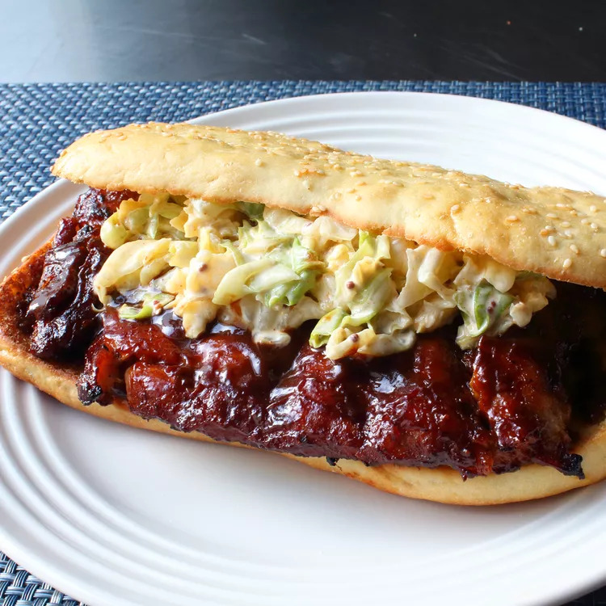

Sándwich Copycat McRib® del chef John

Descripcion:
Sándwich de costillitas deshuesadas,
Simplemente hornee, enfríe, corte, salsa, termine en la parrilla y ¡listo!
Ingredientes:
- ⅓ taza de sal kosher
- ¼ taza de azucar moreno
- 2 cucharadas de chile en polvo
- 2 cucharadas de pimienta negra recién molida
- 1 cucharada de comino molido
- 1 cucharadita de pimienta de cayena
Pasos:
- Precaliente el horno a 325 grados F (165 grados C).
- Mezcle la sal, el azúcar moreno, el chile en polvo, la pimienta, el comino y la
pimienta de cayena para frotar.
- Coloque las costillas en una bandeja para hornear forrada con papel de aluminio.
Sazone ambos lados generosamente con un poco del aliño. Reserve el frotamiento restante
para otro uso. Cubra la parte superior con papel pergamino y envuelva los bordes con papel
aluminio. Cubra toda la bandeja para hornear con otra hoja grande de papel de aluminio,
sellando los lados.
- Hornee en el horno precalentado hasta que estén tiernos, aproximadamente 2 horas
y 45 minutos.
- Desenvuelva las costillas y deje enfriar brevemente hasta que sea seguro manipularlas.
Saque los huesos, vuelva a meter los trozos sueltos de carne en los agujeros y revise
cuidadosamente si hay fragmentos de huesos. Envuelva las costillas nuevamente y refrigere
hasta que estén frías, de 8 horas a toda la noche.
- Corta cada rejilla por la mitad. Cepille ambos lados generosamente con salsa barbacoa.
- Precaliente una parrilla de carbón a fuego alto y engrase ligeramente la parrilla.
- Asa las costillas hasta que estén bien calientes, de 3 a 4 minutos por lado. Retire
de la parrilla y cepille con más salsa barbacoa
- Rocíe más salsa de barbacoa en cada rollo. Emparede cada sección de costilla entre un
panecillo y cubra con ensalada de col.
Volver al Inicio